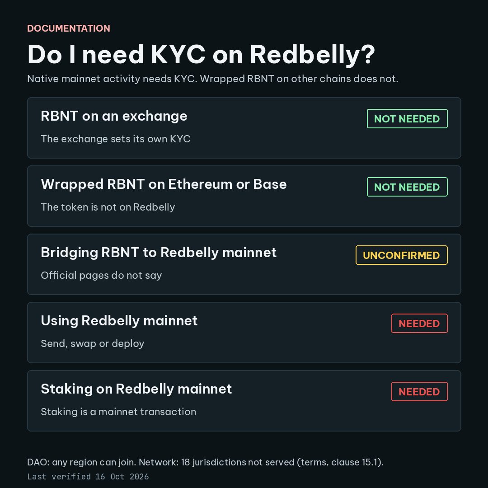

KYC and Wallet Activation Explainer
Lead with the answer: you need KYC to send transactions on Redbelly mainnet. You do not need it to hold RBNT on an exchange or wrapped RBNT on another chain.
Last verified 16 Oct 2026
Native mainnet activity means sending transactions from a wallet on Redbelly Network. That needs KYC. Wrapped RBNT (WRBNT) lives on Ethereum or Base. Redbelly's access check does not apply there [S3] [S8].
The DAO removed its regional restriction. Anyone can join the DAO from any region [S9]. Redbelly Network still does not offer services in 18 jurisdictions listed in clause 15.1 of its terms [S5]. These are two separate rules.
Part A. Do I need KYC?
Find your situation. Read the right column.
| Your situation | KYC? | Reason |
|---|---|---|
| RBNT on an exchange (Gate, MEXC) | Not needed | Redbelly does not ask. The exchange sets its own KYC [S7]. |
| Wrapped RBNT on another chain (Ethereum, Base) | Not needed | The token sits on that chain, not on Redbelly [S8]. |
| Bridging RBNT to Redbelly mainnet | Unconfirmed | Official pages do not say if a not yet enabled address can receive a bridged transfer. Safe order: verify and enable first, then bridge, because you need an enabled wallet to move the coins either way [S3] [S7]. |
| Using Redbelly mainnet (send, swap, deploy) | Needed | Only accounts with the access credential get write access [S3]. |
| Staking on Redbelly mainnet | Needed | Staking is a contract call on mainnet, so it is a transaction [S6] [S3]. |
Same guide as an image, ready to pin:

Part B. The five common questions
1. Do I need KYC, and when?
Yes to send transactions on Redbelly mainnet. No to hold RBNT or WRBNT elsewhere.
Redbelly gives write access only to accounts that hold the Redbelly Network Access Credential [S3]. Wrapped RBNT on Ethereum or Base is outside that check [S8]. An exchange can ask for its own KYC. That is the exchange's rule, not Redbelly's.
2. How many wallets can one verified identity cover?
About 10 wallets per verified identity. Unconfirmed in writing.
After you enable your first account, Redbelly Access offers to add more accounts linked to your identity [S2]. The figure of about 10 comes from the DAO task brief, which says it was verified with Averer [S9]. I found no public Averer page that states it. What happens past the limit is unconfirmed. Go to Part D.
3. How long does approval take?
No official time is published. Unconfirmed.
In early January 2025 Redbelly said Averer had over 1.1 million sign-up requests in two weeks, and that incomplete documents needed manual checks, which slowed approvals [S10]. That was a surge, not a current average. Complete, clear documents are the one thing you control.
4. Can I join from my country?
The DAO: yes, from any region. The network: not from 18 listed jurisdictions.
The DAO's old regional restriction has been removed [S9]. Redbelly Network does not offer services in these jurisdictions: Afghanistan, Central African Republic, North Korea, Democratic Republic of the Congo, Guinea-Bissau (spelled Guinea-Bussau in the terms), Iran, Iraq, Lebanon, Libya, Myanmar, Russia, Somalia, South Sudan, Sudan, Syria, Ukraine, Yemen and Zimbabwe. Tax residents of, or people located in, those places cannot use the site or platform [S5]. Joining the DAO does not change that.
5. Is KYC needed to stake, and why?
Yes, to stake on Redbelly mainnet.
The official staking page describes staking as a deposit call to a mainnet contract [S6]. A deposit is a transaction, and only enabled accounts can send transactions [S3]. Staking through an exchange or on another chain follows that venue's rules. Those are unconfirmed here.
Part C. Get verified and activate a wallet
Before you start
- A wallet that Redbelly Access supports: MetaMask or Coinbase Wallet [S2].
- A valid passport. The official process asks for a photo ID and verifies it with a biometric check [S3]. Use a device with a camera.
- Time to finish in one sitting. Verification is free. The issuer covers the fees [S2].
Steps
- Open access.redbelly.network. Type the address yourself. Do not use links from messages.
- Connect the wallet you want to activate. This address becomes your public address on Redbelly Network [S2]. If your wallet does not have the network, add it by hand with the details in the table below [S13].
- Accept the terms when asked [S5].
- Start identity verification. Averer, the accredited issuer, checks that you are who you say you are [S2] [S4].
- Follow the prompts to scan your passport and complete the biometric check [S3].
- When Averer approves you, it issues the Redbelly Network Access Credential to your account [S2].
- Enable your account in the portal and sign the transaction in your wallet. This is the step that gives the wallet write access [S3]. The issuer covers the fees to grant access [S2]. If enabling fails because the account has no funds, wait a few minutes and retry. That detail is community reported and unconfirmed [S12]. The wallet is now activated.
Network details for your wallet
| Field | Mainnet value |
|---|---|
| Network name | Redbelly Network Mainnet |
| RPC URL | https://governors.mainnet.redbelly.network |
| Chain ID | 151 |
| Currency symbol | RBNT |
| Block explorer | https://redbelly.routescan.io/ |
Source [S13]. The portal also offers a Testnet account after you enable your first one [S2].
Add another wallet to the same identity
- Open Redbelly Access again after your first account is enabled.
- Choose the option to add more accounts connected to your identity [S2].
- Connect the new wallet and enable it. You do not verify again. Stay within the wallet limit in Question 2.
Exact button names on the portal can change. Follow the labels on screen. This guide has no screenshots, so none can show personal information.
Part D. When something goes wrong
Check that your passport photo is clear and complete, since incomplete documents trigger manual checks [S10]. Then contact Averer through the Identity Verification support block on Redbelly Access [S2]. No official wait time exists, so none is promised here.
Contact Averer through the same block and ask for the reason [S2]. Redbelly Access names Averer as the contact for verification problems. The rules on retries are unconfirmed.
Contact Averer and ask what the next step is. The limit is about 10 wallets and its written source is unconfirmed (Question 2). What Averer does beyond the limit is unconfirmed.
Redbelly Access splits help in two. Identity problems go to Averer. Connection or account errors go to Redbelly Support [S2]. Use the Redbelly Support page, which points to the Redbelly Discord [S14]. Check the network details in Part C first.
Start from the Identity Verification support block on Redbelly Access. It is the official route to Averer [S2]. This guide links no separate Averer help or ticket page, because none is confirmed in an official Redbelly source. In your ticket, give the wallet address you used and the exact message on screen.
Sources
Every factual claim above carries a tag. Claims without an official page are marked unconfirmed in the text.
- [S1] Individual onboarding overview: docs.redbelly.network. Onboarding covers wallet authentication, KYC and on-chain permission setup.
- [S2] Redbelly Access and its FAQ: access.redbelly.network. Averer verifies identity, free, MetaMask and Coinbase Wallet, add more accounts, contact Averer.
- [S3] User access: vine.redbelly.network/identity/user-access. Access credential, passport, biometric check, self enable for write access.
- [S4] Accredited issuers: vine.redbelly.network/identity/accredited-issuers.
- [S5] Redbelly terms and conditions, clause 15: redbelly.network/terms-and-conditions.
- [S6] Staking: vine.redbelly.network/nodes/staking.
- [S7] Native currency, where to get RBNT: vine.redbelly.network/native-currency.
- [S8] Bridged tokens, WRBNT: vine.redbelly.network/bridged-tokens/lucidlabs.
- [S9] TASK-18 brief on the DAO Task Board. DAO regional restriction removed. Wallet limit of about 10, verified with Averer, no public Averer page found.
- [S10] Redbelly Network post on KYC waiting times, January 2025: x.com/RedbellyNetwork.
- [S11] Task Board brand kit: taskboard.redbellydao.network/brand.
- [S12] Community reported, unconfirmed: DEV Community troubleshooting guide. Enabling needs a funded account and is per network.
- [S13] Environments: vine.redbelly.network/environments. Mainnet name, RPC URL, chain ID 151, symbol, explorer.
- [S14] Redbelly support: vine.redbelly.network/support.